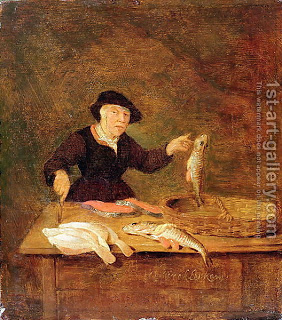

Kiddushin 25 - Cold Fish
The elders of the city of Nezonia did not attend Rav Chisda's lecture. He said to Rav Hamnuna, "Go place a ban on them."
Rav Hamnuna went and asked them, "Why didn't you go to the lecture?" They said, "When we asked him a question, he did not resolve it." Rav Hamnuna said, "Ask me any question." They asked, "A slave whose master emasculated him in his testicles, is it treated as an exposed blemish, in which case the slave goes free, or not?"
Rav Hamnuna did not know. So they said, "You are not Khamnuna (hot fish) but Karnuna (cold fish).